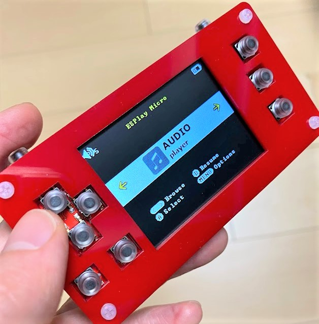
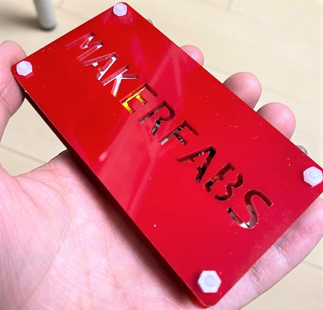
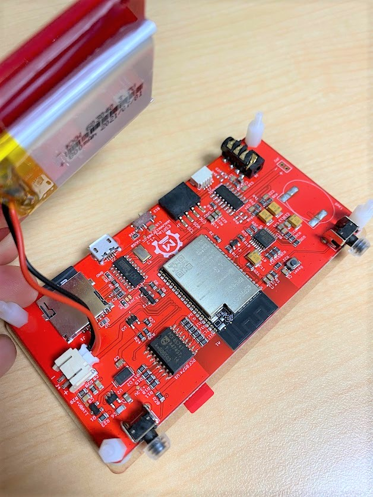
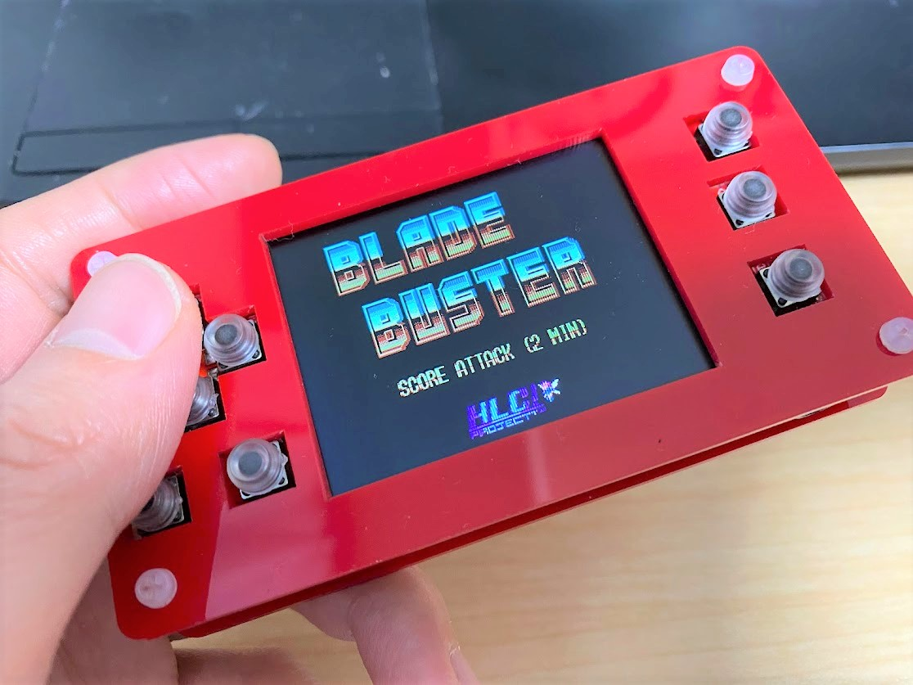
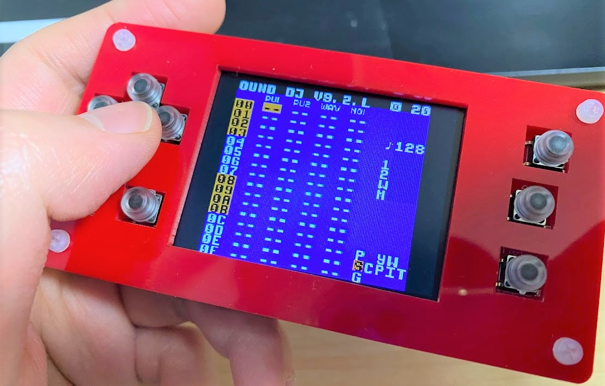

この記事はMakerfabsの提供でお届けします。
今回紹介するESPlay Micro V2はMakerfabsから提供いただいたものです。
（ですが、ESPlay Micro V2をレビューしたい！と言ったのは自分なので、Makerfabsが無理やりこの商品を押しているわけではなく、inajobの一押しアイテム！、という感じです。）
ESPlay Micro V2とは
ESPlay Micro V2はオープンソースの携帯ゲーム機です。


コアとなるマイコンはESP32で、様々なレトロゲームのエミュレータが動作する、本格的なゲーム機です。
また、このゲーム機は以前紹介したESP32を搭載した携帯ゲーム機「ESPlay Micro」 の後継機種です。
仕様
-
ESP32-WROOBER
- という事で技適もあります。日本で使っても安心。
-
十字キー+ A,B, L,R, Start, Selectボタン
-
I2C接続IOエキスパンダIC PCF8574
-
I2S DAC IC UDA1334A (PAM8403?)
-
イヤホンジャック端子
-
USBシリアル変換IC CH340G
-
320*240 TFT ディスプレイ
-
アクリル板による筐体
-
MicroSDカードスロット搭載（MicroSDカードも8GBのものが同梱されていました）
-
拡張用I2C端子
-
800mAh LiPo電池
-
充電IC TP4054
-
電源スイッチ
-
スピーカーは基板上にパターンはあるが、スピーカーが実装されていない
さらに細かい仕様は公式サイトを見てみてください

遊んでみる
※SDカードに謎のROMファイルが入っている場合があります。内容によっては違法なものもあるかもしれないので、利用せず削除してください。
以下のゲームのエミュレータが搭載されています
- ファミコン
- ゲームボーイ
- ゲームボーイカラー
- セガマスターシステム
- ゲームギア
- Color Vision
また、オーディオプレイヤーも搭載されています。
設定画面からAP Modeにすることで、WiFiのアクセスポイントとしてふるまい、そのWiFiに接続することでブラウザ経由でROMファイルやオーディオファイルを簡単に転送できます。
ファミコンのROMとしてブレイドバスター(BLADE BUSTER)を入れてみました。
ブレイドバスターで遊んでる様子
— ina_ani@1歳10ヶ月児のパパ (@ina_ani) February 27, 2022
(スピーカーはパターンがあるが実装されてない。) pic.twitter.com/RcchdepXR2

普通に遊べます。
ゲームボーイのソフトとしてはLSDjを入れてみました。
LSDjも動く！これでどこでも作曲できるね！ pic.twitter.com/GhToN8oyWT
— ina_ani@1歳10ヶ月児のパパ (@ina_ani) February 27, 2022

これはゲームボーイで動作する作曲ソフトです。ESPlay Micro V2も持ち運びに便利なので、これで手軽な作曲マシンとして利用することができます。
ハードウェア面での見どころ
ケース
レーザーカットされたアクリル板2枚をスペーサで挟んでサンドイッチにしています。 よく見る構造ですが、強度はそこそこありますが、横はがら空きなので、ケースとしては頼りないです。
スイッチ
ちょっと硬めのいかにも中国製のタクトスイッチですが、ゴムキャップが搭載されているおかげで、そこまで悪い操作性ではないです。
自分でゲーム機を作るときもこのテクニックは役立ちそうです。
バッテリー
RaspberryPiベースのエミュレータと比べると省電力なので、800mAhバッテリーでも結構長時間遊べます。
エミュレータ以外の遊び方
ちょっとまだ試していないのですが、ESP32を搭載した開発ボードとしても様々な利用方法がありそうです。
- MicroPython
- Arduino
I2C端子もあるので、センサーを外付けすることもできそうです。
まとめ
ESP32を使ったゲーム端末として十分な機能を持った製品だと感じました。利用できるエミュレータの種類は比較的少ないので、エミュレータを目的で買う時は注意が必要です。
またESP32を元としたゲーム開発環境としても簡単に利用できそうです。価格も安いので、この製品にオリジナルゲームを同梱して再販するみたいなことも夢では無いかも？と思いました。
少し似たものとしてM5Stackなどががありますが、ゲームに特化した形状である点が大きな違いです。
原価を考えてもこの価格はありえない安さなので、気になる人は是非買ってみると良いと思います。

関連記事